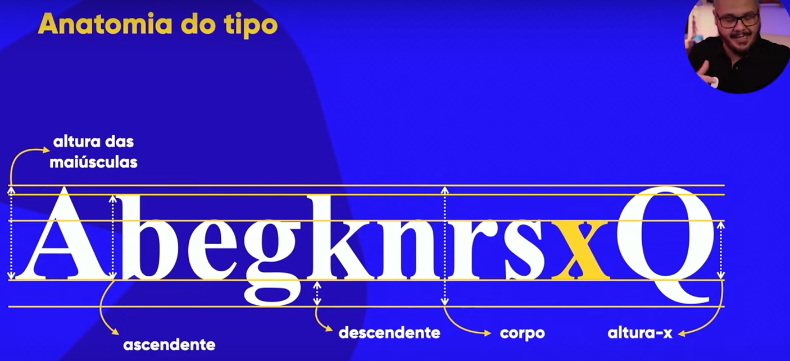

Tipografia
A letra "X" é o ponto de partida para a criação de todas as fontes. A "altura X" é a altura do X minúsculo em uma fonte, sua função é definir qual é a altura base de todas as letras minúsculas em uma fonte.
Altura de versal ou capsline é a altura dos caracteres de caixa alta ou as letras maiúsculas.
A altura do vazamento das letras para cima se chama "Ascedente".
A altura do vazamento das letras para baixo se chama "Descedente".
Corpo é todas as alturas da fonte (a altura total da fonte).
Fontes Serifadas
As Fontes Serifadas são fontes que possuem serifa, que é aquela sobra que possibilita que o cerébro leia facilmente.
Fontes Sans-Serif
As Fontes Sans-Serif são fontes que não possuem serifa. Quando você escrever textos muito longos em sites (ou seja mídia digital), dê preferência a fontes Sans-Serif.
Conclusão
O grande objetivo das fontes, é que ao bater o olho em um site você consiga ler comodamente
Altura-M ou em, é relativo a altura do M maiúsculo de uma fonte.